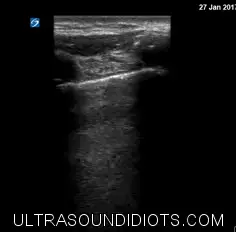

POCUS Tips › Lung
PneumothoraxPTX
A fast, high-yield rule-out at the bedside — air rises, so in a supine patient the anterior chest is where to look.
Open the interactive view with the loop and quiz →
Where to put the probe
- Window
- Anterior chest, most superior point in a supine patient
- Marker
- Patient’s HEAD (12 o’clock)
- probe
- linear
- preset
- lung
- depth
- 4–6 cm
Work the algorithm
- Find the bat sign at the most anterior, most superior point on the side in question.
- Look for sliding. If sliding is present at that spot, there is no pneumothorax there — move on.
- No sliding? Check for a lung pulse and for any B-line; either one argues against pneumothorax.
- Slide laterally to hunt the lung point — the transition from sliding to no sliding both confirms and sizes it.
What you are looking at
- Pleural line without sliding
- Still, bright line — watch several breaths before you commit. Suspicious, but not sufficient on its own.
- A-lines
- Persist in pneumothorax; their presence alongside absent sliding raises suspicion.
- Lung point
- The spot where sliding lung meets still pleura. Pathognomonic, and its position estimates the size — slide laterally to hunt it.
- Barcode / stratosphere sign
- M-mode with no sand layer — parallel lines all the way down. Side-by-side below.
Seashore vs barcode — the same question in M-mode
Top row: the pleural line in B-mode with the M-mode cursor (green) through it. Bottom row: the trace from that cursor — time runs left to right, depth top to bottom.
- Left — normal: Seashore signA smooth banded sky above the pleural line, then a grainy speckled beach below it. That grain is lung sliding written over time — apposed pleura moving against each other. No pneumothorax at this spot.
- Right — pneumothorax: Barcode / stratosphere signUninterrupted horizontal lines top to bottom: nothing beneath the pleural line changes over time, so there is no sand. Air in the pleural space has separated the layers.
Decision rules
| Finding | Weight | Interpretation |
|---|---|---|
| Sliding presentat the point examined | rules out | no pneumothorax at that spot — say where you looked |
| Absent sliding + A-lines + no lung pulseanterior chest, supine | suggestive | consistent with pneumothorax; keep looking for the lung point |
| Lung pointslide laterally from the still zone | confirms | essentially diagnostic, and its position estimates size |
| Any B-line at that spotsingle space | rules out | B-lines require apposed pleura, so pneumothorax cannot be there |
Don’t be fooled — pitfalls
- Absent sliding has many causesPleurodesis, adhesions, mainstem intubation, apnea, severe bullae and dense consolidation all abolish sliding without any air in the pleural space.
- Subcutaneous emphysemaBlocks the beam entirely. Bright disorganized near field means the study is uninterpretable — say so rather than calling a pneumothorax.
- A bleb is not a pneumothoraxFocal absent sliding over emphysematous lung is common. The lung point is what settles it.
- Only scanning one spotA small anterior pneumothorax can hide two interspaces away. Document the zones you examined.
Bad image? Fix it
- Cannot see the pleura clearlyLinear probe, depth 4–6 cm, focus at the pleural line, gain moderate.
- Motion looks ambiguousUse M-mode: seashore versus barcode removes the guesswork, and freezes an image for the chart.
- Ventilated patient, chest moves under the probeRest the heel of your hand on the chest so the probe travels with the wall rather than across it.
- Need to check the apex in a collared trauma patientCome in from the side above the clavicle with a small footprint and accept a partial view; document the limitation.
So what — what the finding changes
- No sliding + hypotension + distended neck veinsTreat as tension physiology and decompress — do not wait for a chest film.
- Suspected pneumothorax, stable patientConfirm with imaging per local practice, size it, and decide observation versus drainage with the team.
- Post-procedure check (line, biopsy, thoracentesis)Scan the same anterior point before and after; a change from sliding to still is your answer.
Educational use only. Not for diagnosis or treatment decisions — confirm findings with formal imaging and your own judgment. By Yonathan Daniel, MD · About · Last reviewed 2026-09-15.